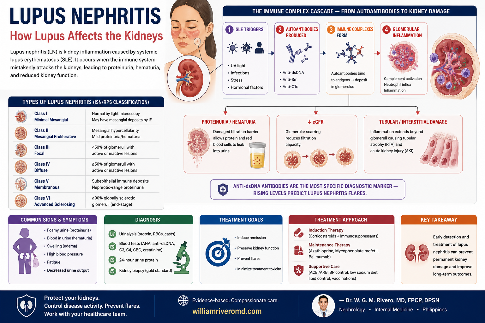
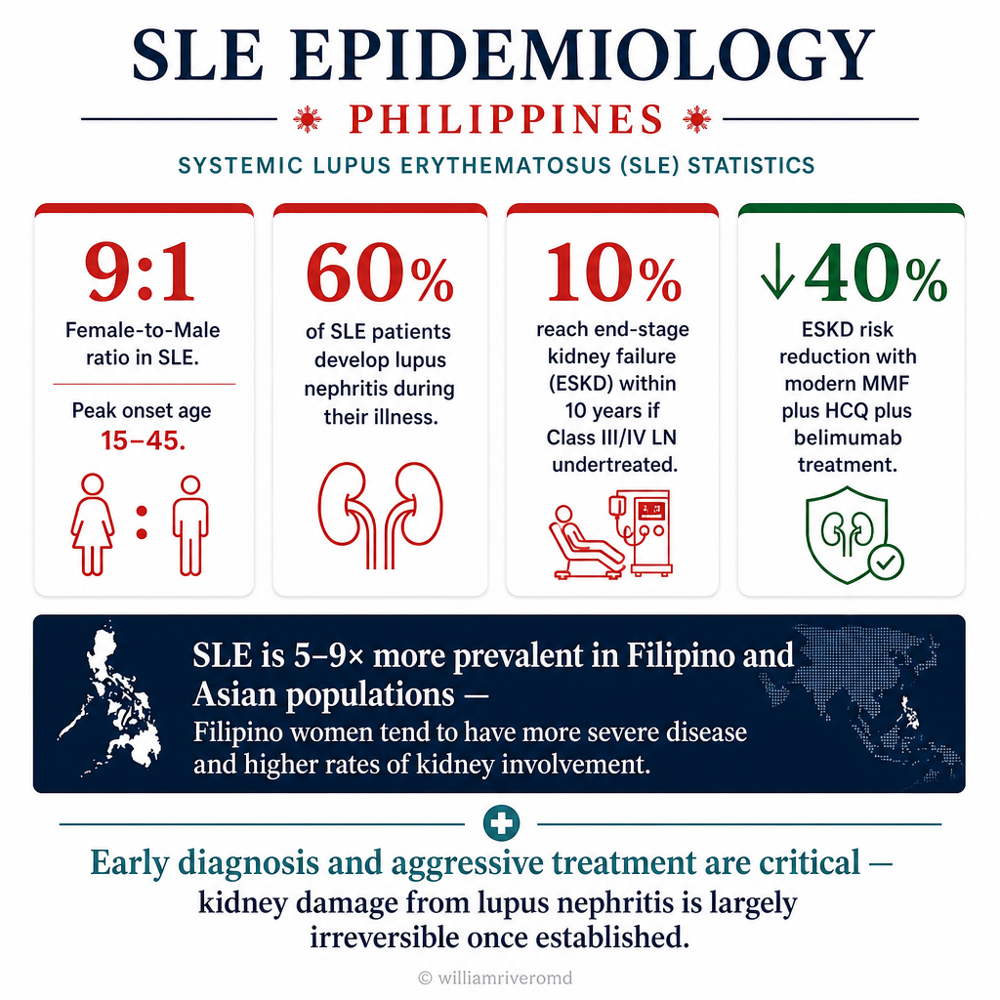
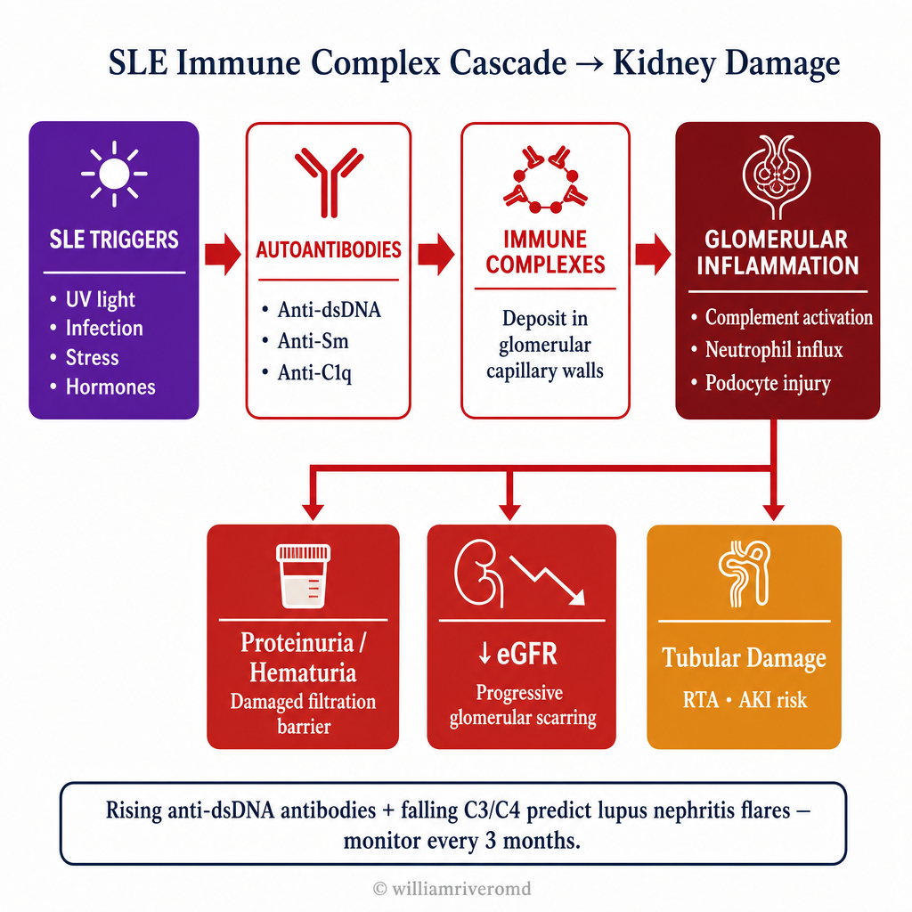
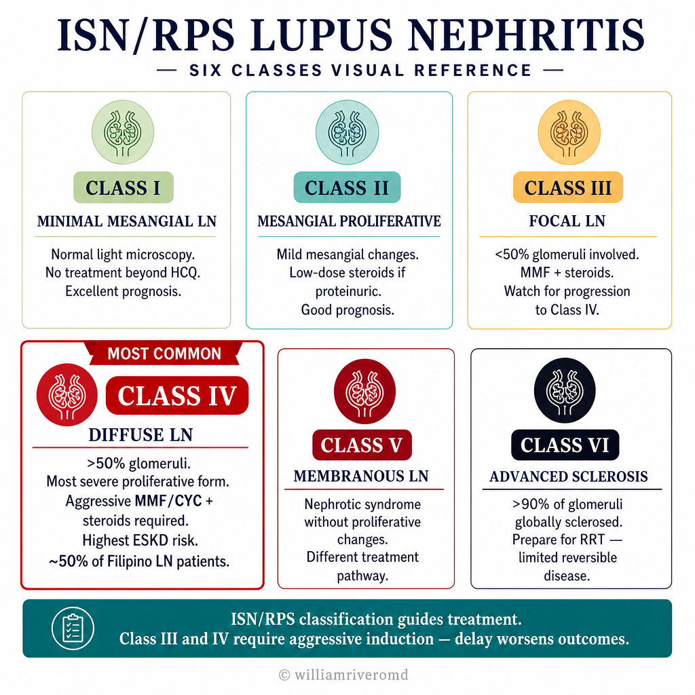
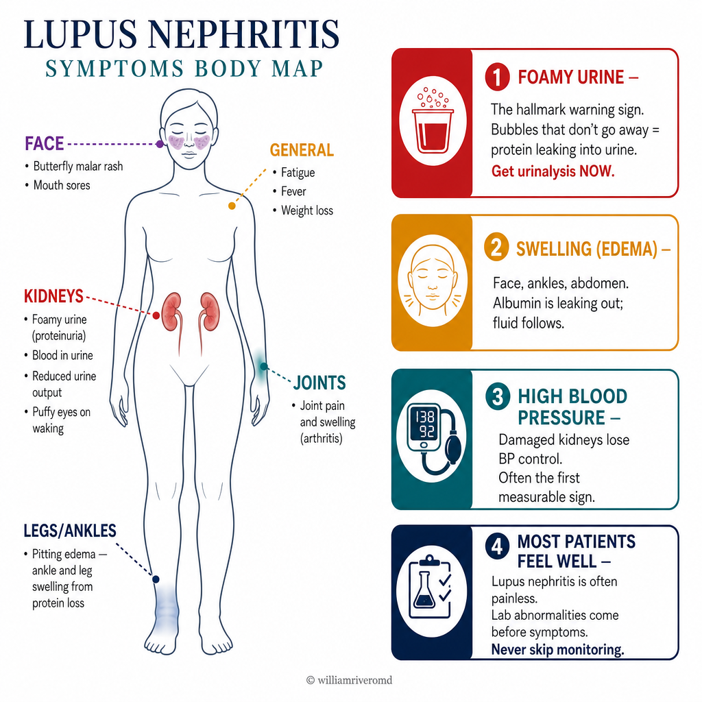

What Is Lupus Nephritis?Ano ang Lupus Nephritis?Unsa ang Lupus Nephritis? Ano ing Lupus Nephritis?
Lupus nephritis (LN) is kidney inflammation caused by systemic lupus erythematosus (SLE) — an autoimmune disease in which the immune system produces antibodies against the body's own DNA and proteins. Up to 50–60% of SLE patients develop lupus nephritis, and it remains the most serious organ manifestation of lupus — responsible for significant morbidity and the leading cause of premature death in SLE patients. The Philippines has one of the highest SLE prevalences in Asia.Ang lupus nephritis (LN) ay pamamaga ng bato na dulot ng systemic lupus erythematosus (SLE) — isang autoimmune na sakit kung saan gumagawa ang immune system ng mga antibody laban sa sariling DNA at protina ng katawan. Hanggang 50–60% ng mga pasyenteng may SLE ang nagkakaroon ng lupus nephritis, at ito ang pinaka-seryosong manifestasyon ng lupus sa mga organo — responsable sa malaking paghihirap at nangungunang sanhi ng maagang pagkamatay sa mga pasyenteng may SLE. Ang Pilipinas ay may isa sa pinakamataas na prevalence ng SLE sa Asya.Ang lupus nephritis (LN) mao ang pamamaga sa kidney nga gikan sa systemic lupus erythematosus (SLE) — usa ka autoimmune nga sakit diin ang immune system nagmugna ug mga antibody batok sa kaugalingon nga DNA ug protina sa lawas. Hangtod 50–60% sa mga pasyente nga adunay SLE ang nagpalambo ug lupus nephritis, ug kini nagpabilin nga pinaka-seryosong manifestasyon sa lupus sa mga organo — responsable sa dako nga kahirap ug nanguna nga hinungdan sa sayo nga kamatayon sa mga pasyente nga adunay SLE. Ang Pilipinas adunay usa sa pinakataas nga prevalence sa SLE sa Asya. Ing lupus nephritis (LN) ya pamamaga ning batu a dulot ning systemic lupus erythematosus (SLE) — metung a autoimmune a sakit nung saan gumagawa ing immune system ning deng antibody laban king sariling DNA at protina ning bangkî. Anggang 50–60% ning deng pasyenteng atin SLE ing nagkakaroon ning lupus nephritis, at ini ing pinaka-seryosong manifestasyon ning lupus king deng organo — responsable king malaking paghihirap at nangungunang sanhi ning maagang pagkamatay king deng pasyenteng atin SLE. Ing Pilipinas ya atin metung king pinakamatas a prevalence ning SLE king Asya.


Lupus nephritis disproportionately affects Filipino women — and Filipino patients with SLE tend to have more aggressive disease than their Western counterparts, making early nephrology involvement essential.Ang lupus nephritis ay higit na nakakaapekto sa mga Pilipinang babae — at ang mga Pilipinong pasyenteng may SLE ay may mas agresibong sakit kaysa sa kanilang mga katapat sa Kanluran, kaya't mahalaga ang maagang pakikisangkot ng nefrolohiya.Ang lupus nephritis labaw nga nakaapekto sa mga Pilipinang babaye — ug ang mga Pilipino nga pasyente nga adunay SLE sagad adunay mas agresibong sakit kaysa sa ilang mga katumbas sa Kasadpan, busa importante ang sayo nga pakiglambigit sa nefrolohiya. Ing lupus nephritis ya higit a nakakaapekto king deng Pilipinang babae — at ing deng Pilipinong pasyenteng atin SLE ya atin mas agresibong sakit kaysa king kanilang deng katapat king Kanluran, kaya't importante ing maagang pakikisangkot ning nefrolohiya.
How SLE Damages the KidneyPaano Sinisira ng SLE ang BatoGiunsa Pagdaot sa SLE ang Kidney Paano Sinisira ning SLE ing Batu

Lupus nephritis is driven by immune complex deposition — the autoantibodies bind to the kidney's glomerular structures, triggering complement activation and inflammatory cell infiltration that progressively destroy nephrons.Ang lupus nephritis ay pinapatakbo ng pag-ipon ng immune complex — ang mga autoantibody ay nagbubuklod sa mga glomerular na istruktura ng bato, na nagpapasigla ng complement activation at pagpasok ng mga inflammatory na selula na unti-unting sumisira ng mga nephron.Ang lupus nephritis gipadagan sa pag-ipon sa immune complex — ang mga autoantibody nagbuklod sa mga glomerular nga istruktura sa kidney, nagpasugod sa complement activation ug pagsulod sa mga inflammatory nga selula nga unti-unting naglaglag sa mga nephron. Ing lupus nephritis ya pinapatakbo ning pag-ipon ning immune complex — ing deng autoantibody ya nagbubuklod king deng glomerular a istruktura ning batu, a nagpapasigla ning complement activation at pagpasok ning deng inflammatory a selula a unti-unting sumisira ning deng nephron.
The Six Classes of Lupus NephritisAng Anim na Klase ng Lupus NephritisAng Unom ka Klase sa Lupus Nephritis Ing Anim a Klase ning Lupus Nephritis

50% glomeruli (MOST COMMON, highest ESKD risk, aggressive induction required, ~50% of Filipino LN patients), Class V membranous LN (nephrotic syndrome, different treatment), Class VI advanced sclerosis >90% (prepare for RRT)" loading="lazy" width="1024" height="1024" style="width:100%;height:auto;border-radius:12px;box-shadow:0 4px 24px rgba(0,0,0,.10);margin:24px 0;display:block;">Kidney biopsy remains essential — clinical features alone cannot determine the class of lupus nephritis, and the class determines the treatment intensity. The ISN/RPS 2018 classification is the current standard.Ang kidney biopsy ay mahalaga pa rin — ang mga klinikal na katangian lamang ay hindi makapagtukoy ng klase ng lupus nephritis, at ang klase ang nagtatakda ng intensity ng paggamot. Ang ISN/RPS 2018 na klasipikasyon ang kasalukuyang pamantayan.Ang kidney biopsy nagpabilin nga importante — ang mga klinikal nga kinaiya lamang dili makatino sa klase sa lupus nephritis, ug ang klase maoy nagpakita sa gidak-on sa pagtambal. Ang ISN/RPS 2018 nga klasipikasyon mao ang karon nga sumbanan. Ing kidney biopsy ya importante pa rin — ing deng klinikal a katangian lamang ya ali makapagtukoy ning klase ning lupus nephritis, at ing klase ing nagtatakda ning intensity ning paggamut. Ing ISN/RPS 2018 a klasipikasyon ing kasalukuyang pamantayan.
Class I — Minimal MesangialKlase I — Minimal MesangialKlase I — Minimal Mesangial Klase I — Minimal Mesangial
Normal glomeruli on light microscopy. Mesangial immune deposits only on immunofluorescence. No clinical renal involvement — no proteinuria or hematuria. Often found incidentally on biopsy for another reason.Normal na glomeruli sa light microscopy. Mesangial immune deposits lamang sa immunofluorescence. Walang klinikal na renal involvement — walang protina o dugo sa ihi. Madalas natutuklasan nang hindi sinasadya sa biopsy para sa ibang dahilan.Normal nga glomeruli sa light microscopy. Mesangial immune deposits lamang sa immunofluorescence. Walay klinikal nga renal involvement — walay protina o dugo sa ihi. Sagad naabot nga wala gituyo sa biopsy alang sa lain nga rason. Normal a glomeruli king light microscopy. Mesangial immune deposits lamang king immunofluorescence. Alang klinikal a renal involvement — alang protina o daya king ihi. Madalas natutuklasan nang ali sinasadya king biopsy para king ibang dahilan.
Class II — Mesangial ProliferativeKlase II — Mesangial ProliferativeKlase II — Mesangial Proliferative Klase II — Mesangial Proliferative
Mesangial hypercellularity on light microscopy. Mild proteinuria and/or microscopic hematuria. Tubular atrophy absent or minimal. Generally benign kidney course.Mesangial hypercellularity sa light microscopy. Banayad na protina sa ihi at/o microscopic hematuria. Wala o minimal na tubular atrophy. Sa pangkalahatan, benign na kurso ng bato.Mesangial hypercellularity sa light microscopy. Banayad nga protina sa ihi ug/o microscopic hematuria. Wala o minimal nga tubular atrophy. Sa kinatibuk-an, benign nga kurso sa kidney. Mesangial hypercellularity king light microscopy. Banayad a protina king ihi at/o microscopic hematuria. Ala o minimal a tubular atrophy. King pangkalahatan, benign a kurso ning batu.
Class III — Focal Proliferative (<50% glomeruli involved)Klase III — Focal Proliferative (<50% ng glomeruli ang apektado)Klase III — Focal Proliferative (<50% sa glomeruli ang apektado) Klase III — Focal Proliferative (<50% ning glomeruli ing apektado)
Active or sclerosing lesions in fewer than half of all glomeruli. Significant proteinuria, hematuria, possible hypertension and mild ↓ eGFR. Can be active (III-A), sclerosing (III-C), or mixed (III-A/C).Aktibo o sclerosing na mga sugat sa mas mababa sa kalahati ng lahat ng glomeruli. Makabuluhang protina sa ihi, hematuria, posibleng altapresyon at banayad na ↓ eGFR. Maaaring aktibo (III-A), sclerosing (III-C), o halo (III-A/C).Aktibo o sclerosing nga mga lesi sa ubos sa katunga sa tanan nga glomeruli. Makainit nga protina sa ihi, hematuria, posibleng altapresyon ug banayad nga ↓ eGFR. Mahimong aktibo (III-A), sclerosing (III-C), o halo (III-A/C). Aktibo o sclerosing a deng sugat king mas mababa king kalahati ning amin ning glomeruli. Makabuluhang protina king ihi, hematuria, posibleng altapresyon at banayad a ↓ eGFR. Maaaring aktibo (III-A), sclerosing (III-C), o halo (III-A/C).
Class IV — Diffuse Proliferative (≥50% glomeruli) — Most Severe Common FormKlase IV — Diffuse Proliferative (≥50% ng glomeruli) — Pinakamatinding Karaniwang AnyoKlase IV — Diffuse Proliferative (≥50% sa glomeruli) — Pinaka-grabe nga Kasagaran nga Anyo Klase IV — Diffuse Proliferative (≥50% ning glomeruli) — Pinakamatinding Karaniwang Anyo
The most common and most severe class — affects 50%+ of glomeruli. Heavy proteinuria (often nephrotic range), active urinary sediment, hypertension, and progressive ↓ eGFR. May present as rapidly progressive GN with rapid eGFR loss over days to weeks. Subclasses: IV-S (segmental) and IV-G (global).Ang pinakakaraniwang at pinakamatinding klase — nakakaapekto sa 50%+ ng glomeruli. Mabigat na protina sa ihi (madalas nephrotic range), aktibong urinary sediment, altapresyon, at progresibong ↓ eGFR. Maaaring magpresenta bilang mabilis na progresibong GN na may mabilis na pagkawala ng eGFR sa loob ng ilang araw hanggang linggo. Mga subklase: IV-S (segmental) at IV-G (global).Ang pinakaagad ug pinaka-grabe nga klase — nakaapekto sa 50%+ sa glomeruli. Mabug-at nga protina sa ihi (sagad nephrotic range), aktibo nga urinary sediment, altapresyon, ug progresibo nga ↓ eGFR. Mahimong magpresenta ingon dali nga progresibo nga GN nga adunay dali nga pagkawala sa eGFR sulod sa pipila ka adlaw hangtod semana. Mga subklase: IV-S (segmental) ug IV-G (global). Ing pinakakaraniwang at pinakamatinding klase — nakakaapekto king 50%+ ning glomeruli. Mabigat a protina king ihi (madalas nephrotic range), aktibong urinary sediment, altapresyon, at progresibong ↓ eGFR. Maaaring magpresenta bilang mabilis a progresibong GN a atin mabilis a pagkaala ning eGFR king loob ning ilang aldo anggang lutu. Deng subklase: IV-S (segmental) at IV-G (global).
Class V — MembranousKlase V — MembranousKlase V — Membranous Klase V — Membranous
Subepithelial immune deposits producing a membranous pattern. Heavy proteinuria (nephrotic syndrome) — but eGFR often preserved initially. Can occur alone or with Class III or IV (mixed class — more aggressive). Similar in appearance to primary membranous nephropathy but differs in treatment.Mga subepithelial immune deposit na nagbibigay ng membranous na pattern. Mabigat na protina sa ihi (nephrotic syndrome) — ngunit ang eGFR ay madalas na napanatili sa simula. Maaaring mangyari nang mag-isa o kasama ang Klase III o IV (mixed class — mas agresibo). Katulad ang hitsura sa primary membranous nephropathy ngunit naiiba sa paggamot.Mga subepithelial immune deposit nga nagmugna sa membranous nga pattern. Mabug-at nga protina sa ihi (nephrotic syndrome) — apan ang eGFR sagad napreserba sa sinugdan. Mahimong mahitabo nag-inusara o kauban ang Klase III o IV (mixed class — mas agresibo). Sama ang hitsura sa primary membranous nephropathy apan lahi sa pagtambal. Deng subepithelial immune deposit a nagbibigay ning membranous a pattern. Mabigat a protina king ihi (nephrotic syndrome) — ngarud ing eGFR ya madalas a napanatili king simula. Maaaring mangyari nang mag-metung o kasama ing Klase III o IV (mixed class — mas agresibo). Katulad ing hitsura king primary membranous nephropathy ngarud naiiba king paggamut.
Class VI — Advanced Sclerosing (≥90% global glomerulosclerosis)Klase VI — Advanced Sclerosing (≥90% global glomerulosclerosis)Klase VI — Advanced Sclerosing (≥90% global glomerulosclerosis) Klase VI — Advanced Sclerosing (≥90% global glomerulosclerosis)
End-stage kidney — ≥90% of glomeruli globally sclerosed with no active inflammation remaining. eGFR severely reduced. Represents burnt-out disease — immunosuppression will not help and may cause harm. Preparation for dialysis or transplant.End-stage kidney — ≥90% ng mga glomeruli ay globally sclerosed na walang natitirang aktibong pamamaga. Malubhang nabawasan ang eGFR. Kumakatawan sa burnt-out na sakit — ang immunosuppression ay hindi makakatulong at maaaring magdulot ng pinsala. Paghahanda para sa dialysis o transplant.End-stage kidney — ≥90% sa mga glomeruli globally sclerosed nga walay nahabilin nga aktibong pamamaga. Grabe nga nakunhuran ang eGFR. Nagrepresenta sa burnt-out nga sakit — ang immunosuppression dili maka-tabang ug mahimong magdaot. Pagpangandam alang sa dialysis o transplant. End-stage kidney — ≥90% ning deng glomeruli ya globally sclerosed a alang natitirang aktibong pamamaga. Malubhang nabawasan ing eGFR. Kumakatawan king burnt-out a sakit — ing immunosuppression ya ali makakatulong at maaaring magdulot ning pinsala. Paghahanda para king dialysis o transplant.
How Lupus Nephritis Presents — Red FlagsPaano Nagpapakita ang Lupus Nephritis — Mga BabalaGiunsa Pagpakita sa Lupus Nephritis — Mga Babala Paano Nagpapakita ing Lupus Nephritis — Deng Babala

Kidney symptomsMga sintomas sa batoMga simtoma sa kidney Deng sintomas king batu
Foamy urine (proteinuria) · Tea-colored or pink urine (hematuria) · Swollen legs, face, abdomen (edema from nephrotic syndrome) · Reduced urine output · Hypertension — often severe and difficult to control · Rising creatinine on labs — may be rapid (RPGN) in severe Class IV.Makulob na ihi (protina sa ihi) · Kulay tsaa o rosas na ihi (dugo sa ihi) · Namumugto ang mga binti, mukha, tiyan (edema mula sa nephrotic syndrome) · Nabawasan ang pag-ihi · Altapresyon — kadalasang malala at mahirap kontrolin · Tumataas na creatinine sa labs — maaaring mabilis (RPGN) sa malubhang Klase IV.Mabula nga ihi (protina sa ihi) · Kulay tsaa o rosas nga ihi (dugo sa ihi) · Namamaga ang mga bitiis, nawong, tiyan (edema gikan sa nephrotic syndrome) · Nakunhuran ang pag-ihi · Altapresyon — sagad malala ug lisod kontrolon · Nagtubo nga creatinine sa labs — mahimong dali (RPGN) sa grabe nga Klase IV. Makulob a ihi (protina king ihi) · Kulay tsaa o rosas a ihi (daya king ihi) · Namumugto ing deng binti, mukha, tiyan (edema mula king nephrotic syndrome) · Nabawasan ing pag-ihi · Altapresyon — kadalasang malala at mahirap kontrolin · Tumataas a creatinine king labs — maaaring mabilis (RPGN) king malubhang Klase IV.
SLE systemic features alongsideMga sistematikong katangian ng SLEMga sistematiko nga kinaiya sa SLE Deng sistematikong katangian ning SLE
Butterfly rash across cheeks and nose · Joint pain and swelling · Hair loss · Mouth ulcers · Chest pain (serositis — pericarditis/pleuritis) · Fever · Extreme fatigue · Raynaud's phenomenon (fingers turn white/blue in cold) · Photosensitivity (rash worsens in sun).Butterfly rash sa mga pisngi at ilong · Pananakit at pamamaga ng kasukasuan · Pagkalugas ng buhok · Mga sugat sa bibig · Sakit sa dibdib (serositis — pericarditis/pleuritis) · Lagnat · Matinding pagod · Raynaud's phenomenon (kumukuplay at nangungulilap ang mga daliri sa lamig) · Photosensitivity (lumalalang pantal sa araw).Butterfly rash sa mga pisngi ug ilong · Sakit ug pamamaga sa mga kasukasuan · Pagkahubog sa buhok · Mga sugat sa baba · Sakit sa dughan (serositis — pericarditis/pleuritis) · Hilanat · Grabeng kakapoy · Raynaud's phenomenon (nagbuoray ug asul ang mga tudlo sa kabugnaw) · Photosensitivity (naggrabe ang pantal sa adlaw). Butterfly rash king deng pisngi at ilong · Pananakit at pamamaga ning kasukasuan · Pagkalugas ning buhok · Deng sugat king bibig · Sakit king dibdib (serositis — pericarditis/pleuritis) · Lagnat · Matinding pagod · Raynaud's phenomenon (kumukuplay at nangungulilap ing deng daliri king lamig) · Photosensitivity (lumalalang pantal king aldo).
Lupus nephritis emergency — seek immediate careEmergency sa lupus nephritis — humingi ng agarang tulong medikalEmergency sa lupus nephritis — mangita dayon og medikal nga tabang Emergency king lupus nephritis — humingi ning agarang tulong medikal
Rapid rise in creatinine over days to weeks + reduced urine output + active urinary sediment (RBC casts) = possible rapidly progressive GN from Class IV LN. This is a nephrology emergency — delay in treatment can mean permanent, irreversible loss of kidney function within days. Do not wait for a scheduled appointment — go to the ER.Mabilis na pagtaas ng creatinine sa loob ng ilang araw hanggang linggo + nabawasan ang pag-ihi + aktibong sedimento sa ihi (RBC casts) = posibleng mabilis na progresibong GN mula sa Klase IV LN. Ito ay isang emergency sa nefrolohiya — ang pagkaantala sa paggamot ay maaaring magdulot ng permanenteng, hindi na mapanauling pagkawala ng function ng bato sa loob ng ilang araw. Huwag maghintay ng iskedyuladong appointment — pumunta sa ER.Dali nga pagtaas sa creatinine sulod sa pipila ka adlaw hangtod semana + nakunhuran nga pag-ihi + aktibo nga sedimento sa ihi (RBC casts) = posibleng dali nga progresibo nga GN gikan sa Klase IV LN. Kini usa ka emergency sa nefrolohiya — ang pagkahulay sa pagtambal mahimong magpasabut sa permanente, dili na mapasig-uli nga pagkawala sa function sa kidney sulod sa pipila ka adlaw. Ayaw hulat sa iskedyuladong appointment — adto sa ER. Mabilis a pagtaas ning creatinine king loob ning ilang aldo anggang lutu + nabawasan ing pag-ihi + aktibong sedimento king ihi (RBC casts) = posibleng mabilis a progresibong GN mula king Klase IV LN. Ini ya metung a emergency king nefrolohiya — ing pagkaantala king paggamut ya maaaring magdulot ning permanenteng, ali a mapanauling pagkaala ning function ning batu king loob ning ilang aldo. Eka maghintay ning iskedyuladong appointment — pumunta king ER.
Diagnosing and Classifying Lupus NephritisPag-diagnose at Pag-uuri ng Lupus NephritisPag-diagnose ug Pag-iklasipika sa Lupus Nephritis Pag-diagnose at Pag-uuri ning Lupus Nephritis
| TestPagsusuriPagsulay Pagsusuri | What it detectsAno ang natutuklas nitoUnsa ang iyang nakita Ano ing natutuklas nini | Significance in LNKahalaga sa LNKahinungdanon sa LN Kahalaga king LN |
|---|---|---|
| Anti-dsDNA antibody | Antibodies against double-stranded DNA | Most specific for SLE; high levels predict LN flares; monitor for treatment response |
| C3, C4 complement | Complement consumption by immune complexes | ↓ C3 + C4 = active disease; normalize with successful treatment |
| UACR (spot urine) | Urine albumin-creatinine ratio | >500 mg/g = significant — suggests Class III/IV; >3,000 = nephrotic range (often Class V) |
| Urine microscopy | RBC casts, WBC casts, dysmorphic RBCs | RBC casts = glomerular bleeding = active proliferative disease (Class III/IV) — critical finding |
| 24-hour urine protein | Total protein excretion | >3.5 g/day = nephrotic syndrome; baseline before treatment; monitor response |
| ANA (antinuclear antibody) | General autoantibody screen | >99% of SLE patients positive; not specific but required for SLE diagnosis |
| Anti-Sm, Anti-SSA/B, antiphospholipid antibodies | SLE-specific and overlap antibodies | Anti-Sm highly specific for SLE; antiphospholipid = thrombosis risk; affects treatment |
| Kidney biopsy | Class, activity, chronicity indices | Gold standard — cannot manage LN without knowing the class; guides induction choice |
Treating Lupus Nephritis — Induction and MaintenancePaggamot ng Lupus Nephritis — Induction at MaintenancePagtambal sa Lupus Nephritis — Induction ug Maintenance Paggamut ning Lupus Nephritis — Induction at Maintenance

Modern LN treatment has two phases — induction (aggressive suppression of active disease) followed by maintenance (long-term relapse prevention). Total duration is at least 3 years; many patients need indefinite maintenance therapy.Ang modernong paggamot ng LN ay may dalawang bahagi — induction (agresibong pagpigil ng aktibong sakit) na sinusundan ng maintenance (pangmatagalang pag-iwas sa pag-ulit). Ang kabuuang tagal ay hindi bababa sa 3 taon; maraming pasyente ang nangangailangan ng walang katiyakang maintenance therapy.Ang modernong pagtambal sa LN adunay duha ka hugna — induction (agresibong pagpugong sa aktibong sakit) nga gisundan sa maintenance (pangtagal nga paglikay sa pag-ulit). Ang kinatibuk-ang panahon labing menos 3 ka tuig; daghang pasyente ang nanginahanglan ug walay katapusan nga maintenance therapy. Ing modernong paggamut ning LN ya atin dalawang bahagi — induction (agresibong pagpigil ning aktibong sakit) a sinusundan ning maintenance (pangmatagalang pag-iwas king pag-ulit). Ing kabuuang tagal ya ali bababa king 3 banua; dacal a pasyente ing nangangailangan ning alang katiyakang maintenance therapy.
Mycophenolate mofetil (MMF) — the backbone drugMycophenolate mofetil (MMF) — ang pangunahing gamotMycophenolate mofetil (MMF) — ang punoan nga tambal Mycophenolate mofetil (MMF) — ing pangunahing gamut
MMF (CellCept, Myforic) is now the preferred agent for both induction and maintenance of Class III/IV LN — equal efficacy to cyclophosphamide for induction with better side-effect profile and no risk of ovarian failure. Available in the Philippines and covered by PhilHealth for LN. Key monitoring: CBC monthly (leukopenia risk), liver function, blood pressure. Absolutely contraindicated in pregnancy — mandatory contraception.Ang MMF (CellCept, Myforic) ay kasalukuyang pinipiling ahente para sa induction at maintenance ng Klase III/IV LN — katumbas ang bisa sa cyclophosphamide para sa induction ngunit mas magandang profile ng epekto at walang panganib ng pagkabigo ng obaryo. Available sa Pilipinas at saklaw ng PhilHealth para sa LN. Pangunahing pagsubaybay: CBC bawat buwan (panganib ng leukopenia), function ng atay, presyon ng dugo. Ganap na kontraindikado sa pagbubuntis — ipinag-uutos ang pagpigil sa pagbubuntis.Ang MMF (CellCept, Myforic) karon ang piniling ahente alang sa induction ug maintenance sa Klase III/IV LN — parehas nga epekto sa cyclophosphamide alang sa induction apan mas maayo nga profile sa side-effect ug walay risgo sa pagkabigo sa obaryo. Available sa Pilipinas ug sakop sa PhilHealth alang sa LN. Importante nga pagsubay: CBC matag bulan (risgo sa leukopenia), function sa atay, presyon sa dugo. Ganap nga kontraindikado sa pagbusog — gikinahanglang paglikay sa pagbusog. Ing MMF (CellCept, Myforic) ya kasalukuyang pinipiling ahente para king induction at maintenance ning Klase III/IV LN — katumbas ing bisa king cyclophosphamide para king induction ngarud mas magandang profile ning epekto at alang panganib ning pagkabigo ning obaryo. Available king Pilipinas at saklaw ning PhilHealth para king LN. Pangunahing pagsubaybay: CBC bawat bulan (panganib ning leukopenia), function ning atay, presyon ning daya. Ganap a kontraindikado king pagbubuntis — ipinag-uutos ing pagpigil king pagbubuntis.
Hydroxychloroquine — the non-negotiableHydroxychloroquine — ang di-maaaring iwananHydroxychloroquine — ang dili kapugngan Hydroxychloroquine — ing di-maaaring iwanan
Hydroxychloroquine (HCQ, Plaquenil) must be given to ALL SLE patients with and without nephritis — indefinitely unless contraindicated. HCQ reduces lupus flares by 50%, reduces damage accrual, reduces thrombosis risk, improves lipids, and most importantly reduces mortality in SLE. It takes 3–6 months to reach full effect. Annual eye exam required (retinal toxicity risk — rare but preventable with monitoring).Ang Hydroxychloroquine (HCQ, Plaquenil) ay dapat ibigay sa LAHAT ng pasyenteng may SLE na may o walang nephritis — nang walang katiyakang panahon maliban kung may kontraindikasyon. Binabawasan ng HCQ ang mga flare ng lupus ng 50%, binabawasan ang pag-iipon ng pinsala, binabawasan ang panganib ng thrombosis, pinapabuti ang mga lipid, at pinakamahalaga, binabawasan ang mortality sa SLE. Tumatagal ng 3–6 buwan upang maabot ang buong epekto. Kinakailangan ang taunang pagsusuri ng mata (panganib ng retinal toxicity — bihira ngunit mapipigilan sa pagsubaybay).Ang Hydroxychloroquine (HCQ, Plaquenil) kinahanglan ihatag sa TANAN nga mga pasyente nga adunay SLE nga adunay ug walay nephritis — sa walay katapusan gawas kung adunay kontraindikasyon. Nagpaubos ang HCQ sa mga flare sa lupus og 50%, nagpaubos sa pag-iipon sa kadaot, nagpaubos sa risgo sa thrombosis, nagpauswag sa mga lipid, ug pinaka-importante, nagpaubos sa mortality sa SLE. Nagkuha og 3–6 ka bulan aron maabtan ang tibuok nga epekto. Gikinahanglan ang tinuig nga eksamen sa mata (risgo sa retinal toxicity — bihira apan mapugngan pinaagi sa pagsubay). Ing Hydroxychloroquine (HCQ, Plaquenil) ya dapat ibigay king LAHAT ning pasyenteng atin SLE a atin o alang nephritis — nang alang katiyakang panahon maliban nung atin kontraindikasyon. Binabawasan ning HCQ ing deng flare ning lupus ning 50%, binabawasan ing pag-iipon ning pinsala, binabawasan ing panganib ning thrombosis, pinapabuti ing deng lipid, at pinakamahalaga, binabawasan ing mortality king SLE. Tumatagal ning 3–6 bulan upang maabot ing buong epekto. Kinakailangan ing taunang pagsusuri ning mata (panganib ning retinal toxicity — bihira ngarud mapipigilan king pagsubaybay).
New Targeted Therapies for Lupus NephritisMga Bagong Target na Terapiya para sa Lupus NephritisMga Bag-ong Targeted nga Terapiya alang sa Lupus Nephritis Deng Bagong Target a Terapiya para king Lupus Nephritis

Belimumab (Benlysta)
Mechanism: Monoclonal antibody against BAFF (B-lymphocyte survival factor) — reduces autoreactive B-cell survival and autoantibody production. Evidence: BLISS-LN trial (2020) — added to standard therapy, belimumab significantly reduced risk of renal flare, serious adverse kidney events, and improved complete renal response rate by 30%. Philippines: Available but expensive — approximately ₱80,000–120,000 per infusion monthly. PhilHealth CCEP may cover.Mekanismo: Monoclonal antibody laban sa BAFF (B-lymphocyte survival factor) — nagbabawas ng kaligtasan ng autoreactive B-cell at produksyon ng autoantibody. Ebidensya: BLISS-LN trial (2020) — idinagdag sa standard therapy, ang belimumab ay makabuluhang nagbawas ng panganib ng renal flare, malubhang masamang kaganapan sa bato, at nagpabuti ng rate ng kumpletong renal response ng 30%. Pilipinas: Available ngunit mahal — humigit-kumulang ₱80,000–120,000 bawat infusion bawat buwan. Maaaring saklaw ng PhilHealth CCEP.Mekanismo: Monoclonal antibody batok sa BAFF (B-lymphocyte survival factor) — nagpaubos sa kaligtasan sa autoreactive B-cell ug produksyon sa autoantibody. Ebidensya: BLISS-LN trial (2020) — gidugang sa standard therapy, ang belimumab grabe nga nagpaubos sa risgo sa renal flare, grabe nga masamang hitabo sa kidney, ug nagpauswag sa rate sa kompleto nga renal response og 30%. Pilipinas: Available apan mahal — mga ₱80,000–120,000 matag infusion matag bulan. Mahimong sakopan sa PhilHealth CCEP. Mekanismo: Monoclonal antibody laban king BAFF (B-lymphocyte survival factor) — nagbabawas ning kaligtasan ning autoreactive B-cell at produksyon ning autoantibody. Ebidensya: BLISS-LN trial (2020) — idinagdag king standard therapy, ing belimumab ya makabuluhang nagbawas ning panganib ning renal flare, malubhang masamang kaganapan king batu, at nagpabuti ning rate ning kumpletong renal response ning 30%. Pilipinas: Available ngarud mahal — humigit-kumulang ₱80,000–120,000 bawat infusion bawat bulan. Maaaring saklaw ning PhilHealth CCEP.
Voclosporin (Lupkynis)
Mechanism: Novel calcineurin inhibitor — blocks T-cell activation and has direct podocyte-protective effects. Evidence: AURORA trial (2021) — MMF + voclosporin achieved complete renal response in 40.8% vs 22.5% with MMF alone. FDA-approved 2021 specifically for active LN. Philippines: Not yet registered locally — specialist access or compassionate use.Mekanismo: Bagong calcineurin inhibitor — nagharang ng pag-activate ng T-cell at may direktang epekto sa pagprotekta sa podocyte. Ebidensya: AURORA trial (2021) — ang MMF + voclosporin ay nakamit ang kumpletong renal response sa 40.8% kumpara sa 22.5% sa MMF lamang. FDA-approved 2021 para sa aktibong LN. Pilipinas: Hindi pa nairehistro nang lokal — espesyalistang access o compassionate use.Mekanismo: Bag-ong calcineurin inhibitor — nagbabag sa pag-activate sa T-cell ug adunay direkta nga epekto sa pagpanalipod sa podocyte. Ebidensya: AURORA trial (2021) — ang MMF + voclosporin nakab-ot ang kompleto nga renal response sa 40.8% kumpara sa 22.5% sa MMF lamang. FDA-approved 2021 alang sa aktibong LN. Pilipinas: Wala pa narehistro sa lokal — espesyalista nga access o compassionate use. Mekanismo: Bagong calcineurin inhibitor — nagharang ning pag-activate ning T-cell at atin direktang epekto king pagprotekta king podocyte. Ebidensya: AURORA trial (2021) — ing MMF + voclosporin ya nakamit ing kumpletong renal response king 40.8% kumpara king 22.5% king MMF lamang. FDA-approved 2021 para king aktibong LN. Pilipinas: Ali pa nairehistro nang lokal — espesyalistang access o compassionate use.
Anifrolumab (Saphnelo)
Mechanism: Anti-interferon-α receptor antibody — blocks the type I interferon pathway that drives SLE autoimmunity. Type I IFN is elevated in 60–80% of SLE patients and correlates with disease activity. Evidence: TULIP-2 trial — reduces overall SLE disease activity, skin and musculoskeletal involvement. Lupus nephritis-specific trial (IRIS) ongoing. Philippines: Not yet registered.Mekanismo: Anti-interferon-α receptor antibody — nagharang sa type I interferon pathway na nagpapatakbo ng SLE autoimmunity. Ang Type I IFN ay mataas sa 60–80% ng mga pasyenteng may SLE at may kaugnayan sa aktibidad ng sakit. Ebidensya: TULIP-2 trial — nagbabawas ng pangkalahatang aktibidad ng SLE, paglahok ng balat at musculoskeletal. Lupus nephritis-specific trial (IRIS) patuloy. Pilipinas: Hindi pa nairehistro.Mekanismo: Anti-interferon-α receptor antibody — nagbabag sa type I interferon pathway nga nagpadagan sa SLE autoimmunity. Ang Type I IFN taas sa 60–80% sa mga pasyente nga adunay SLE ug may relasyon sa aktibidad sa sakit. Ebidensya: TULIP-2 trial — nagpaubos sa kinatibuk-ang aktibidad sa SLE, paglambigit sa panit ug musculoskeletal. Lupus nephritis-specific trial (IRIS) nagpadayon. Pilipinas: Wala pa narehistro. Mekanismo: Anti-interferon-α receptor antibody — nagharang king type I interferon pathway a nagpapatakbo ning SLE autoimmunity. Ing Type I IFN ya matas king 60–80% ning deng pasyenteng atin SLE at atin kaugnayan king aktibidad ning sakit. Ebidensya: TULIP-2 trial — nagbabawas ning pangkalahatang aktibidad ning SLE, paglahok ning balat at musculoskeletal. Lupus nephritis-specific trial (IRIS) patuloy. Pilipinas: Ali pa nairehistro.
SGLT2 inhibitors in lupus nephritis — new evidenceMga SGLT2 inhibitor sa lupus nephritis — bagong ebidensyaMga SGLT2 inhibitor sa lupus nephritis — bag-ong ebidensya Deng SGLT2 inhibitor king lupus nephritis — bagong ebidensya
Multiple cohort studies and subgroup analyzes from major SGLT2i trials show that dapagliflozin and empagliflozin reduce proteinuria and slow eGFR decline in LN — independently of glucose control. The glomerular hemodynamic protection and anti-inflammatory effects of SGLT2 inhibitors appear to benefit LN just as they benefit other proteinuric nephropathies. KDIGO 2024 now includes consideration of SGLT2i in all proteinuric CKD including LN. Locally available: Catania or Rhea (dapagliflozin).Maraming cohort studies at subgroup analyzes mula sa mga pangunahing SGLT2i trials ang nagpapakita na ang dapagliflozin at empagliflozin ay nagbabawas ng protina sa ihi at nagpapabagal ng pagbaba ng eGFR sa LN — nang hiwalay sa kontrol ng glucose. Ang proteksyon ng glomerular hemodynamics at anti-inflammatory na epekto ng mga SGLT2 inhibitor ay tila nagbibigay-benepisyo sa LN tulad ng iba pang proteinuric nephropathies. Kasama na ngayon ng KDIGO 2024 ang pagsasaalang-alang sa SGLT2i sa lahat ng proteinuric CKD kasama ang LN. Available sa lokal: Catania o Rhea (dapagliflozin).Daghang cohort studies ug subgroup analyzes gikan sa mga nanguna nga SGLT2i trials nagpakita nga ang dapagliflozin ug empagliflozin nagpaubos sa protina sa ihi ug nagpabagal sa pagkunhod sa eGFR sa LN — independente sa kontrol sa glucose. Ang proteksyon sa glomerular hemodynamics ug anti-inflammatory nga epekto sa mga SGLT2 inhibitor daw naghatag og benepisyo sa LN sama sa ubang proteinuric nephropathies. Kasama na karon sa KDIGO 2024 ang pagsalabot sa SGLT2i sa tanan nga proteinuric CKD apil ang LN. Available sa lokal: Catania o Rhea (dapagliflozin). Dacal a cohort studies at subgroup analyzes mula king deng pangunahing SGLT2i trials ing nagpapakita a ing dapagliflozin at empagliflozin ya nagbabawas ning protina king ihi at nagpapabagal ning pagbaba ning eGFR king LN — nang hialay king kontrol ning glucose. Ing proteksyon ning glomerular hemodynamics at anti-inflammatory a epekto ning deng SGLT2 inhibitor ya tila nagbibigay-benepisyo king LN tulad ning iba pang proteinuric nephropathies. Kasama a ngayon ning KDIGO 2024 ing pagsasaalang-alang king SGLT2i king amin ning proteinuric CKD kasama ing LN. Available king lokal: Catania o Rhea (dapagliflozin).
Monitoring Lupus Nephritis — What, When, and WhyPagsubaybay sa Lupus Nephritis — Ano, Kailan, at BakitPagsubay sa Lupus Nephritis — Unsa, Kanus-a, ug Ngano Pagsubaybay king Lupus Nephritis — Ano, Kailan, at Bakit

| TestPagsusuriPagsulay Pagsusuri | FrequencyDalasKadaghan Dalas | Why it mattersBakit ito mahalagaNgano kini importante Bakit ini importante |
|---|---|---|
| UACR (spot urine)UACR (spot na ihi)UACR (spot nga ihi) UACR (spot a ihi) | Every 3 monthsBawat 3 buwanMatag 3 ka bulan Bawat 3 bulan | Rising UACR = relapse signal; target <500 mg/g in complete responsePagtaas ng UACR = senyales ng pag-ulit; target na <500 mg/g sa kumpletong tugonPagtaas sa UACR = sinyales sa pag-ulit; target nga <500 mg/g sa kompleto nga tubag Pagtaas ning UACR = senyales ning pag-ulit; target a <500 mg/g king kumpletong tugon |
| Urine microscopyUrine microscopyUrine microscopy Urine microscopy | Every 3 months or with symptomsBawat 3 buwan o kapag may sintomasMatag 3 ka bulan o kung adunay simtoma Bawat 3 bulan o nung atin sintomas | Return of RBC casts = active nephritis — do not wait; act immediatelyPagbabalik ng RBC casts = aktibong nephritis — huwag maghintay; kumilos agadPagbalik sa RBC casts = aktibong nephritis — ayaw hulat; lihok dayon Pagbabalik ning RBC casts = aktibong nephritis — eka maghintay; kumilos agad |
| Serum creatinine, eGFRSerum creatinine, eGFRSerum creatinine, eGFR Serum creatinine, eGFR | Every 3 monthsBawat 3 buwanMatag 3 ka bulan Bawat 3 bulan | Monitor for eGFR decline; rising creatinine with active sediment = flare or Class IV progressionSubaybayan ang pagbaba ng eGFR; pagtaas ng creatinine na may aktibong sedimento = flare o Klase IV na pag-unladBantayan ang pagkunhod sa eGFR; pagtaas sa creatinine nga adunay aktibong sedimento = flare o Klase IV nga pag-uswag Subaybayan ing pagbaba ning eGFR; pagtaas ning creatinine a atin aktibong sedimento = flare o Klase IV a pag-unlad |
| Anti-dsDNA, C3, C4Anti-dsDNA, C3, C4Anti-dsDNA, C3, C4 Anti-dsDNA, C3, C4 | Every 3 monthsBawat 3 buwanMatag 3 ka bulan Bawat 3 bulan | Rising anti-dsDNA + falling C3/C4 = imminent flare — escalate treatment BEFORE kidney involvement worsensPagtaas ng anti-dsDNA + pagbaba ng C3/C4 = malapit nang mangyaring flare — itaas ang paggamot BAGO lumala ang paglahok ng batoPagtaas sa anti-dsDNA + pagkunhod sa C3/C4 = hapit nang mahitabo nga flare — taason ang pagtambal sa WALA PA malalain ang paglambigit sa kidney Pagtaas ning anti-dsDNA + pagbaba ning C3/C4 = malapit nang mangyaring flare — itaas ing paggamut BAGO lumala ing paglahok ning batu |
| CBC, liver functionCBC, function ng atayCBC, function sa atay CBC, function ning atay | Monthly during induction; every 3 months on maintenanceBuwanan sa induction; bawat 3 buwan sa maintenanceBuwan-buwan sa induction; matag 3 ka bulan sa maintenance Buwanan king induction; bawat 3 bulan king maintenance | MMF/azathioprine bone marrow suppression; steroid-related liver effectsPagpigil ng utak ng buto ng MMF/azathioprine; epekto ng steroid sa atayPagpugong sa utak sa bukog sa MMF/azathioprine; epekto sa atay sa steroid Pagpigil ning utak ning buto ning MMF/azathioprine; epekto ning steroid king atay |
| Blood pressurePresyon ng dugoPresyon sa dugo Presyon ning daya | Every visit; home monitoring idealBawat pagbisita; pinakamabuti ang pagsubaybay sa bahayMatag pagbisita; pinaka-maayo ang pagsubay sa balay Bawat pagbisita; pinakamabuti ing pagsubaybay king bale | Uncontrolled BP accelerates LN progression; target <130/80 on ACE/ARBAng hindi kontroladong presyon ay nagpapabilis ng pag-unlad ng LN; target na <130/80 sa ACE/ARBAng dili kontrolado nga presyon nagpapaspas sa pag-uswag sa LN; target nga <130/80 sa ACE/ARB Ing ali kontroladong presyon ya nagpapabilis ning pag-unlad ning LN; target a <130/80 king ACE/ARB |
| Fasting glucose, lipidsFasting glucose, mga lipidFasting glucose, mga lipid Fasting glucose, deng lipid | Every 6 monthsBawat 6 buwanMatag 6 ka bulan Bawat 6 bulan | Steroid-induced diabetes and dyslipidemia — common; treat aggressivelyDiyabetes at dyslipidemia na dulot ng steroid — karaniwan; gamutin nang agresiboDiyabetes ug dyslipidemia nga dulot sa steroid — kasagaran; tambalon og agresibo Diyabetes at dyslipidemia a dulot ning steroid — karaniwan; gamutin nang agresibo |
| Eye exam (fundoscopy)Pagsusuri ng mata (fundoscopy)Pagsusi sa mata (fundoscopy) Pagsusuri ning mata (fundoscopy) | AnnuallyTaun-taonMatag tuig Taun-banua | HCQ retinal toxicity — rare but irreversible; annual screening detects earlyHCQ retinal toxicity — bihira ngunit hindi na mapanauling; natutuklasan ng taunang screening nang maagaHCQ retinal toxicity — bihira apan dili na mapasig-uli; nakit-an sa tinuig nga screening og sayo HCQ retinal toxicity — bihira ngarud ali a mapanauling; natutuklasan ning taunang screening nang maaga |
| DEXA bone scanDEXA bone scanDEXA bone scan DEXA bone scan | At baseline, then every 1–2 years on steroidsSa simula, pagkatapos ay bawat 1–2 taon sa steroidsSa baseline, dayon matag 1–2 ka tuig sa steroids King simula, kapabanuan ya bawat 1–2 banua king steroids | Steroid-induced osteoporosis — give calcium + vitamin D + bisphosphonate if neededOsteoporosis na dulot ng steroid — ibigay ang calcium + vitamin D + bisphosphonate kung kailanganOsteoporosis nga dulot sa steroid — ihatag ang calcium + vitamin D + bisphosphonate kung gikinahanglan Osteoporosis a dulot ning steroid — ibigay ing calcium + vitamin D + bisphosphonate nung kailangan |
Lupus Nephritis and PregnancyLupus Nephritis at PagbubuntisLupus Nephritis ug Pagbusog Lupus Nephritis at Pagbubuntis
High-risk combinationKombinasyong may mataas na panganibKombinasyon nga adunay taas nga risgo Kombinasyong atin matas a panganib
Pregnancy in SLE carries significantly higher risks: lupus flares (30–50% during pregnancy), preeclampsia (3× higher risk), preterm birth, intrauterine growth restriction, and neonatal lupus. Active LN at time of conception dramatically increases all risks. Recommendation: Achieve complete renal response (UACR <500, stable eGFR, inactive anti-dsDNA) for at least 6 months before attempting conception.Ang pagbubuntis sa SLE ay nagdadala ng mas mataas na mga panganib: mga lupus flare (30–50% sa panahon ng pagbubuntis), preeclampsia (3× mas mataas na panganib), maaga na panganganak, intrauterine growth restriction, at neonatal lupus. Ang aktibong LN sa oras ng pagbubuntis ay lubos na nagpapataas ng lahat ng panganib. Rekomendasyon: Makamit ang kumpletong renal response (UACR <500, matatag na eGFR, hindi aktibong anti-dsDNA) nang hindi bababa sa 6 buwan bago subukan ang pagbubuntis.Ang pagbusog sa SLE nagdala og mas taas nga mga risgo: mga lupus flare (30–50% sa panahon sa pagbusog), preeclampsia (3× mas taas nga risgo), sayo nga panganak, intrauterine growth restriction, ug neonatal lupus. Ang aktibong LN sa panahon sa pagbusog grabe nga nagpataas sa tanan nga mga risgo. Rekomendasyon: Makab-ot ang kompleto nga renal response (UACR <500, matatag nga eGFR, dili aktibong anti-dsDNA) sa labing menos 6 ka bulan sa wala pa pagsulay sa pagbusog. Ing pagbubuntis king SLE ya nagdadala ning mas matas a deng panganib: deng lupus flare (30–50% king panahon ning pagbubuntis), preeclampsia (3× mas matas a panganib), maaga a panganganak, intrauterine growth restriction, at neonatal lupus. Ing aktibong LN king oras ning pagbubuntis ya lubos a nagpapataas ning amin ning panganib. Rekomendasyon: Makamit ing kumpletong renal response (UACR <500, matatag a eGFR, ali aktibong anti-dsDNA) nang ali bababa king 6 bulan bago subukan ing pagbubuntis.
Safe drugs in pregnancyMga ligtas na gamot sa pagbubuntisMga luwas nga tambal sa pagbusog Deng ligtas a gamut king pagbubuntis
Safe: Hydroxychloroquine (MUST continue — reduces flare risk) · Low-dose prednisone · Azathioprine (preferred maintenance immunosuppressant in pregnancy) · Low-dose aspirin (for antiphospholipid antibodies) · Low molecular weight heparin (if antiphospholipid syndrome). STOP before conception: MMF (causes congenital malformations — stop 3 months before) · Cyclophosphamide · ACE inhibitors (stop at conception) · Belimumab.Ligtas: Hydroxychloroquine (KAILANGANG ituloy — nagbabawas ng panganib ng flare) · Mababang dosis na prednisone · Azathioprine (pinipiling maintenance immunosuppressant sa pagbubuntis) · Mababang dosis na aspirin (para sa antiphospholipid antibodies) · Low molecular weight heparin (kung may antiphospholipid syndrome). IHINTO bago ang pagbubuntis: MMF (nagdudulot ng mga kapansanan sa kapanganakan — ihinto 3 buwan bago) · Cyclophosphamide · ACE inhibitors (ihinto sa pagbubuntis) · Belimumab.Luwas: Hydroxychloroquine (KINAHANGLAN nga ipadayon — nagpaubos sa risgo sa flare) · Ubos nga dosis nga prednisone · Azathioprine (piniling maintenance immunosuppressant sa pagbusog) · Ubos nga dosis nga aspirin (alang sa antiphospholipid antibodies) · Low molecular weight heparin (kung adunay antiphospholipid syndrome). IHUNONG sa wala pa ang pagbusog: MMF (nagdulot sa mga depekto sa pagkatawo — ihunong 3 buwan sa wala pa) · Cyclophosphamide · ACE inhibitors (ihunong sa pagbusog) · Belimumab. Ligtas: Hydroxychloroquine (KAILANGANG ituloy — nagbabawas ning panganib ning flare) · Mababang dosis a prednisone · Azathioprine (pinipiling maintenance immunosuppressant king pagbubuntis) · Mababang dosis a aspirin (para king antiphospholipid antibodies) · Low molecular weight heparin (nung atin antiphospholipid syndrome). IHINTO bago ing pagbubuntis: MMF (nagdudulot ning deng kapansanan king kapanganakan — ihinto 3 bulan bago) · Cyclophosphamide · ACE inhibitors (ihinto king pagbubuntis) · Belimumab.
Living with Lupus NephritisPamumuhay na may Lupus NephritisPagkinabuhi nga adunay Lupus Nephritis Pamumuhay a atin Lupus Nephritis
Sun protection — non-negotiableProteksyon sa araw — hindi maaaring balewalainProteksyon sa adlaw — dili kapugngan Proteksyon king aldo — ali maaaring balewalain
UV light directly triggers SLE flares by activating apoptosis of skin cells, releasing nuclear antigens that stimulate autoantibody production. Wear SPF 50+ sunscreen every day (even indoors near windows). Long sleeves and hats outdoors. UV-filtering car window film. Avoid peak sun hours (10AM–2PM). This is medical management, not vanity.Ang UV light ay direktang nagti-trigger ng mga SLE flare sa pamamagitan ng pag-activate ng apoptosis ng mga selula ng balat, na nagpapalabas ng mga nuclear antigen na nagpapasigla ng produksyon ng autoantibody. Magsuot ng SPF 50+ na sunscreen araw-araw (kahit sa loob ng bahay malapit sa mga bintana). Mahabang manggas at sombrero sa labas. UV-filtering na pelikula sa bintana ng sasakyan. Iwasan ang mga oras ng pinaka-matinding araw (10AM–2PM). Ito ay medikal na pamamahala, hindi vanity.Ang UV light direkta nga nag-trigger sa mga SLE flare pinaagi sa pag-activate sa apoptosis sa mga selula sa panit, nagpagawas sa mga nuclear antigen nga nagpapasiguro sa produksyon sa autoantibody. Isul-ob ang SPF 50+ nga sunscreen matag adlaw (bisan sulod sa balay duol sa mga bintana). Dugay nga mga kamot ug kalo sa gawas. UV-filtering nga pelikula sa bintana sa sakyanan. Likayi ang mga oras sa pinaka-kusog nga adlaw (10AM–2PM). Kini medikal nga pagdumala, dili vanity. Ing UV light ya direktang nagti-trigger ning deng SLE flare king pamamagitan ning pag-activate ning apoptosis ning deng selula ning balat, a nagpapalabas ning deng nuclear antigen a nagpapasigla ning produksyon ning autoantibody. Magsuot ning SPF 50+ a sunscreen aldo-aldo (kahit king loob ning bale malapit king deng bintana). Mahabang manggas at sombrero king labas. UV-filtering a pelikula king bintana ning sasakyan. Iwasan ing deng oras ning pinaka-matinding aldo (10AM–2PM). Ini ya medikal a pamamahala, ali vanity.
Stress and sleep managementPamamahala ng stress at tulogPagdumala sa stress ug tulog Pamamahala ning stress at tulog
Psychological stress is a known lupus flare trigger — cortisol and catecholamines directly alter immune regulation. 7–9 hours of quality sleep. Mindfulness-based stress reduction has RCT evidence in SLE. Regular gentle exercise (swimming, yoga, walking). Avoid overnight shifts and circadian disruption. Join a local SLE support group — the Philippine Alliance of Patient Organizations (PAPO) has SLE chapters.Ang sikolohikal na stress ay kilalang trigger ng lupus flare — ang cortisol at catecholamines ay direktang nagbabago ng regulasyon ng immune system. 7–9 oras ng kalidad na tulog. Ang mindfulness-based stress reduction ay may ebidensya mula sa RCT sa SLE. Regular na mahinahong ehersisyo (paglangoy, yoga, paglalakad). Iwasan ang gabi na trabaho at pagkagambala ng circadian rhythm. Sumali sa isang lokal na grupo ng suporta para sa SLE — ang Philippine Alliance of Patient Organizations (PAPO) ay may mga SLE chapter.Ang sikolohikal nga stress nahibaloan nga trigger sa lupus flare — ang cortisol ug catecholamines direkta nga nagbag-o sa regulasyon sa immune system. 7–9 ka oras nga kalidad nga tulog. Ang mindfulness-based stress reduction adunay ebidensya gikan sa RCT sa SLE. Regular nga mahinay nga ehersisyo (paglangoy, yoga, paglakaw). Likayi ang gabii nga trabaho ug pagkaguba sa circadian rhythm. Apil sa usa ka lokal nga grupo sa suporta alang sa SLE — ang Philippine Alliance of Patient Organizations (PAPO) adunay mga SLE chapter. Ing sikolohikal a stress ya kilalang trigger ning lupus flare — ing cortisol at catecholamines ya direktang nagbabago ning regulasyon ning immune system. 7–9 oras ning kalidad a tulog. Ing mindfulness-based stress reduction ya atin ebidensya mula king RCT king SLE. Regular a mahinahong ehersisyo (paglangoy, yoga, paglalakad). Iwasan ing gabi a obran at pagkagambala ning circadian rhythm. Sumali king metung a lokal a grupo ning suporta para king SLE — ing Philippine Alliance of Patient Organizations (PAPO) ya atin deng SLE chapter.
Infection preventionPag-iwas sa impeksyonPaglikay sa impeksyon Pag-iwas king impeksyon
Immunosuppressive therapy increases infection risk significantly. All recommended vaccines must be given (use inactivated vaccines only — no live vaccines while on immunosuppression): influenza annually, pneumococcal, hepatitis B. Avoid contact with sick individuals when on high-dose steroids. Any fever >38°C on immunosuppression = same-day medical evaluation — do not self-medicate.Ang immunosuppressive therapy ay nagpapataas ng panganib ng impeksyon nang malaki. Lahat ng inirerekomendang bakuna ay dapat ibigay (gamitin lamang ang mga inactivated na bakuna — walang live na bakuna habang nasa immunosuppression): trangkaso taun-taon, pneumococcal, hepatitis B. Iwasan ang pakikipag-ugnayan sa mga maysakit kapag nasa mataas na dosis ng steroids. Anumang lagnat na >38°C sa immunosuppression = pagsusuring medikal sa parehong araw — huwag mag-self-medicate.Ang immunosuppressive therapy nagpataas sa risgo sa impeksyon og daghan. Tanan nga girekomenda nga mga bakuna kinahanglan ihatag (gamiton lamang ang mga inactivated nga bakuna — walay live nga bakuna samtang nasa immunosuppression): trangkaso matag tuig, pneumococcal, hepatitis B. Likayi ang kontak sa mga masakiton kung naa sa taas nga dosis nga steroids. Bisan unsang hilanat nga >38°C sa immunosuppression = medikal nga pagsusi sa mao nga adlaw — ayaw mag-self-medicate. Ing immunosuppressive therapy ya nagpapataas ning panganib ning impeksyon nang malaki. Amin ning inirerekomendang bakuna ya dapat ibigay (gamitin lamang ing deng inactivated a bakuna — alang live a bakuna habang nasa immunosuppression): trangkaso taun-banua, pneumococcal, hepatitis B. Iwasan ing pakikipag-ugnayan king deng maysakit nung nasa matas a dosis ning steroids. Anumang lagnat a >38°C king immunosuppression = pagsusuring medikal king parehong aldo — eka mag-self-medicate.
W. G. M. Rivero, MD, FPCP, DPSN
Specialist in Internal Medicine, Nephrology, and Clinical Nutrition.Espesyalista sa Panloob na Medisina, Nefrolohiya, at Klinikal na Nutrisyon.Espesyalista sa Internal nga Medisina, Nefrolohiya, ug Klinikal nga Nutrisyon. Espesyalista king Panloob a Medisina, Nefrolohiya, at Klinikal a Nutrisyon. Joint management of lupus nephritis with rheumatology at all clinic locations.Pinagsamang pamamahala ng lupus nephritis kasama ang rheumatology sa lahat ng lokasyon ng klinika.Pinagsamang pagdumala sa lupus nephritis uban ang rheumatology sa tanan nga lokasyon sa klinika. Pinagsamang pamamahala ning lupus nephritis kasama ing rheumatology king amin ning lokasyon ning klinika.
PRC 0105184 · seriousmd.com/doc/williamrivero · williamrivero@gmail.com
Lupus Nephritis Clinician Quick Guide
A one-page, KDIGO 2024 + ACR 2024 summary tailored for Philippine practice — biopsy thresholds, treat-to-target goals, induction by ISN/RPS class, mandatory adjuncts, maintenance, refractory escalation, repeat-biopsy indications, special populations, and emerging therapies. Detailed sections follow below.

Lupus Nephritis — Epidemiology & Burden
SLE prevalence varies fivefold by ancestry, and lupus nephritis (LN) follows the same gradient — Asian, Hispanic, and African ancestries carry both higher prevalence and worse renal outcomes than European-ancestry cohorts. Filipino patients sit firmly in the high-burden, high-severity quadrant.
International estimates
Philippines-specific data
Robust nationwide registry data is limited (the Philippine Society of Nephrology and the Philippine Rheumatology Association have ongoing efforts), but cohort studies from PGH, NKTI, St. Luke's, and Makati Medical Center give a consistent picture:
The four Philippine drivers of worse outcomes
- Delayed presentation — many patients are referred only after Cr is >3 or with established nephrotic syndrome.
- Infection-related mortality — TB reactivation, fungal infections, and bacterial sepsis under triple immunosuppression are the leading killers, not the disease itself.
- Limited access to biologics — voclosporin (~₱120,000/month), belimumab (~₱80,000/month), and rituximab (~₱150,000 per induction) remain out of reach for most patients without HMO coverage.
- Adherence cliffs — MMF cost (₱5,000–8,000/month) and steroid side effects drive interruption; flares almost always follow non-adherence rather than drug failure.
Drug-cost reality (Manila NKTI/PGH benchmarks, 2024–2025):
| Therapy | Approximate monthly cost | PhilHealth / Z-benefit coverage |
|---|---|---|
| Cyclophosphamide IV (Eurolupus) | ~₱500–800 / pulse | Partial — covered under SLE Z-package in select hospitals |
| Mycophenolate mofetil (MMF) | ~₱5,000–8,000 | Not covered; generics available since 2019 reduced cost ~50% |
| Hydroxychloroquine | ~₱600–1,200 | Not covered; widely available generic |
| Voclosporin | ~₱120,000+ | Not covered; PMAP application possible |
| Belimumab IV | ~₱80,000+ | Not covered; PMAP application possible |
| Rituximab (off-label LN) | ~₱150,000 / induction | Not covered for LN indication |
Clinical Decision Algorithm — From Suspicion to Induction
The single highest-leverage clinical decision in LN is whether and when to biopsy. The second is choosing the right induction regimen. The decision tree below condenses KDIGO 2024 + ACR 2024 guidance into a Philippine-applicable workflow.

Induction Therapy — Class-Specific Regimens
All proliferative LN (Class III, IV, mixed III/V or IV/V) requires combination immunosuppression: glucocorticoids + a steroid-sparing agent ± a third-line biologic. KDIGO 2024 endorses triple therapy from the start in moderate-to-high risk disease, marking a departure from older sequential approaches.
| Class | Recommended induction | Notes for Filipino practice |
|---|---|---|
| Class I / II (minimal mesangial / mesangial proliferative) |
HCQ + RAAS blockade. Steroids only if extrarenal SLE activity demands. No cytotoxic immunosuppression for the kidney indication alone. | Common in early presentations. Watch for evolution to proliferative class — repeat biopsy if proteinuria rises. |
| Class III / IV (focal / diffuse proliferative) |
Pulse methylprednisolone 0.25–0.5 g IV × 3 days, followed by oral prednisone 0.5 mg/kg/day, taper to ≤7.5 mg by 3–6 months. Plus one of: • MMF 2–3 g/day × 6 months (preferred — equivalent efficacy, fewer infections, preserves fertility) • Cyclophosphamide IV (Eurolupus regimen: 500 mg q2wk × 6 doses) — preferred over high-dose NIH regimen Plus a third agent for high-risk: • Voclosporin 23.7 mg BID OR • Belimumab 10 mg/kg IV q4wk |
MMF generic (Cellcept generic, Mycept) is the practical first-line in PH due to cost and infection profile. Eurolupus > NIH for cumulative cyclophosphamide dose (3 g vs 9 g) — significant fertility implications in young Filipino women. Triple therapy with voclosporin or belimumab is reserved for high-risk patients with insurance/PMAP support. |
| Class V (membranous LN) |
Pure membranous: HCQ + RAAS blockade. If nephrotic-range proteinuria persists → MMF 2–3 g/day + low-dose prednisone. Calcineurin inhibitor (tacrolimus or voclosporin) is increasingly preferred per KDIGO 2024. | Pure Class V is uncommon in Filipinos (~10% of LN). When seen, tacrolimus 0.05–0.1 mg/kg/day BID is more accessible than voclosporin and has comparable efficacy. |
| Mixed Class III/V or IV/V | Treat as proliferative — same induction as Class III/IV with steroid + MMF (or CYC) + consider triple therapy from the start. | Often missed when biopsy is read as "predominantly Class V." Always look at the LM, IF, and EM together. |
| Class VI (advanced sclerotic, >90% globally sclerotic) |
Supportive care; immunosuppression does not reverse damage. Prepare for KRT. | Often a missed Class IV that progressed unrecognized. Highest mortality cohort. |
Adjuncts mandated for every LN patient regardless of class
- Hydroxychloroquine 5 mg/kg/day (max 400 mg) — reduces flares, improves renal response, reduces thrombotic risk. Annual ophthalmology screening after year 5.
- RAAS blockade (ACEi or ARB) titrated to BP <130/80, even in normotensive proteinuria.
- Statin if LDL >100 (or any nephrotic-range proteinuria).
- Pneumocystis jirovecii prophylaxis (cotrimoxazole 800/160 mg 3×/week or daily) for any patient on prednisone ≥20 mg/day for >4 weeks combined with another immunosuppressant.
- Latent TB screen before biologic initiation. PHL has high TB prevalence — IGRA preferred over TST due to BCG.
- Vaccinations: pneumococcal (PCV13 + PPSV23), influenza annual, HBV, HPV, COVID-19, shingles (recombinant) — ideally before starting B-cell depletion.
Maintenance Therapy — Duration, Tapering, Withdrawal
Maintenance immunosuppression must continue for at least 36 months after achieving complete renal response (KDIGO 2024). Earlier withdrawal is the strongest single predictor of flare and progression to ESKD.
Steroid taper schedule (proliferative LN)
| Time from induction | Prednisone-equivalent dose | Notes |
|---|---|---|
| Days 1–3 | Pulse methylprednisolone 0.25–0.5 g IV daily | For Class III/IV; not all clinicians use pulse for Class V. |
| Weeks 1–4 | 0.5 mg/kg/day (max 40–60 mg) | KDIGO 2024 supports lower starting dose (0.4 mg/kg) when triple therapy is used. |
| Weeks 5–8 | Taper by 5 mg every 1–2 weeks | Watch for flare with rapid taper. |
| Months 3–6 | ≤10 mg/day | Goal: ≤7.5 mg by month 6. |
| Months 6–12 | 5–7.5 mg/day | If CRR sustained, can attempt 2.5 mg or full taper. |
| Beyond 12 months | 0–5 mg/day | Some patients tolerate full withdrawal; many require maintenance 2.5–5 mg. |
Considering immunosuppression withdrawal? KDIGO 2024 supports a slow attempted withdrawal in patients with all of: complete renal response sustained ≥3 years, low SLE activity, normal complement, negative anti-dsDNA, and no extrarenal flares in >1 year. Withdraw MMF first, then steroids, then HCQ last (often never). Re-flare risk is approximately 25% over 5 years.
Refractory and Relapsing Lupus Nephritis
Approximately 20–30% of LN patients fail first-line induction (no PRR by 6 months, or no CRR by 12 months). The cause is roughly equally split between true drug failure, undertreatment due to dose reduction or non-adherence, and chronic damage misdiagnosed as active disease. The decision tree must distinguish these before escalation.
Relapses are managed similarly to initial induction but with a lower threshold for adding biologics — relapsed patients have higher progression risk, and the cumulative cyclophosphamide ceiling (<9–12 g lifetime, ideally <6 g in young women) often limits CYC re-use.
The Case for Repeat Biopsy — When and Why
Repeat (per-protocol or for-cause) kidney biopsy in LN remains one of the most underused diagnostic tools in PH nephrology. Its yield is high enough that KDIGO 2024 explicitly endorses it in three scenarios.
Practical PH considerations: ultrasound-guided percutaneous biopsy at PGH, NKTI, St. Luke's, MMC, and most regional tertiary centers is now routine with <1% major complication rate. Cost is approximately ₱8,000–25,000 depending on facility. Coordinate with renal pathology (NKTI, PGH, and a small number of private labs offer immunofluorescence and electron microscopy) — without IF and EM, LN classification is unreliable.
Special Populations — Pregnancy, Pediatric, Transplant
Pregnancy in LN
The single most important rule: plan the pregnancy around remission, not the other way around. Preconception counseling should aim for ≥6 months of stable CRR before conception. Active LN at conception triples the rates of pre-eclampsia, preterm delivery, and fetal loss.
- Continue: hydroxychloroquine (mandatory throughout pregnancy — withdrawal triggers flare), low-dose aspirin (reduces pre-eclampsia in APS-positive patients), prednisone at lowest effective dose.
- Continue if needed: azathioprine 1.5–2 mg/kg/day (pregnancy-compatible), tacrolimus, cyclosporine.
- Stop ≥6 weeks before conception: MMF (teratogenic — facial cleft, microtia), cyclophosphamide (teratogenic + gonadotoxic), methotrexate, ACEi/ARB (replace with labetalol or methyldopa for BP).
- Belimumab: use throughout pregnancy now considered acceptable (registry data reassuring), although discontinuation is still common practice.
- Anti-Ro/La positive mothers: fetal echo at 16, 18, and 22 weeks for congenital heart block; HCQ reduces risk.
- Co-management mandatory: high-risk OB + nephrology + rheumatology. Filipino practice: aim for tertiary center delivery (PGH, NKTI, MMC, St. Luke's, or major regional med center).
Pediatric and adolescent LN
Pediatric SLE (onset <18 years) carries higher LN prevalence (~80% will develop LN) and worse renal outcomes than adult-onset disease. Filipino pediatric LN cohorts show a particularly high rate of Class IV with crescents at presentation.
- Induction is the same as adult Class III/IV (MMF or CYC + steroids), but cyclophosphamide gonadotoxicity is a bigger consideration — Eurolupus regimen strongly preferred.
- Steroid impact on growth and bone is severe — use steroid-sparing strategies aggressively from day one.
- Adherence is the biggest single challenge in adolescents. Engage the patient directly, not just the parent.
- Refer to pediatric nephrology (PGH, NKTI, Philippine Children's Medical Center) for biopsy and induction.
LN in dialysis and post-transplant
Once LN reaches ESKD, immunosuppression is generally minimized — clinical SLE activity often quiets dramatically on dialysis. Maintain hydroxychloroquine; minimize chronic steroids unless extrarenal disease demands.
Transplantation: LN is a good kidney transplant indication. Outcomes mirror non-LN ESKD patients when lupus is in remission ≥6–12 months pre-transplant. Recurrent LN in the allograft is uncommon (~10%) and usually mild. Living-donor transplant from a sibling carries a small concern about shared genetic predisposition but is not a contraindication.
Emerging Research and the Future of LN Therapy
The therapeutic landscape for LN has expanded more in the last 5 years than in the previous 30. Below is a clinician's-eye summary of the agents and concepts most likely to reach Philippine practice in the next 1–5 years, organized by mechanism.
B-cell directed therapies — beyond rituximab
| Agent / Trial | Mechanism | Status & relevance |
|---|---|---|
| Obinutuzumab (REGENCY, NOBILITY) | Glycoengineered anti-CD20 — deeper, more durable B-cell depletion than rituximab | Phase III REGENCY positive 2024 (CRR 47% vs 33%). Likely first-line biologic if FDA-approved for LN. PHL access via PMAP only initially. |
| Anti-CD19 CAR-T (multiple Phase I/II) | Autologous CAR-T directed at CD19, deep B-cell reset | Single-infusion drug-free remission in >30 refractory SLE patients (Schett group, Erlangen). Game-changing if reproducible. Cost >$500,000 currently. |
| Ianalumab (anti-BAFF receptor) | Depletes B cells AND blocks BAFF signaling — two mechanisms in one molecule | Phase III SIRIUS-LN ongoing. Expected readout 2026–2027. |
| Telitacicept | BAFF + APRIL dual inhibitor | Approved in China (2021) for SLE; Phase III LN data emerging. Likely cheaper biologic option for PH if approved here. |
Type I interferon pathway
| Agent / Trial | Mechanism | Status & relevance |
|---|---|---|
| Anifrolumab (TULIP-LN1, IRIS) | Anti-IFNAR1 — blocks all type I interferons | FDA-approved for SLE 2021. Phase III LN trial ongoing (IRIS). Promising in patients with high IFN signature. |
| Litifilimab (anti-BDCA2) | Targets plasmacytoid dendritic cells (the major IFN producers) | Phase II positive in cutaneous SLE. LN trials beginning. |
Cereblon modulators & intracellular targets
| Agent / Trial | Mechanism | Status & relevance |
|---|---|---|
| Iberdomide (Phase II/III) | Cereblon E3 ligase modulator — degrades Ikaros and Aiolos transcription factors | Reduces SLE flares and SLEDAI. Phase III LN ongoing. |
| Deucravacitinib | TYK2 allosteric inhibitor — targets type I IFN, IL-12, IL-23 signaling | Phase II PAISLEY-LN positive. Oral, accessible — could be first-line oral biologic if confirmed. |
| Baricitinib | JAK1/2 inhibitor | Phase III SLE-BRAVE-1 negative (2022). LN-specific trials de-prioritized. |
Other notable directions
- Treat-to-target trials — analogous to RA. Ongoing efforts to define and validate "lupus low disease activity state" (LLDAS) as the routine clinical target.
- Liquid biopsy / urinary biomarkers — urinary CD11c, CXCL13, soluble TWEAK, IFN-induced proteins. Goal: replace repeat kidney biopsy with non-invasive monitoring.
- Microbiome modulation — gut dysbiosis (specifically Ruminococcus gnavus expansion) implicated in LN flare risk; trials of dietary and probiotic intervention.
- Steroid-free induction protocols — increasing evidence that triple therapy (MMF + voclosporin/belimumab + low-dose or no steroid) achieves CRR with substantially less steroid exposure.
- Genetic risk scoring — Asian-population GWAS data growing; Filipino-specific HLA and risk allele profiling underway at PGH and a few private labs.
For the Philippine clinician: the next 3 years will likely bring obinutuzumab and possibly telitacicept into routine reach, anifrolumab in high-resource settings, and CAR-T as the eventual rescue therapy for the few patients who fail everything else. Voclosporin and belimumab will remain the mainstay biologics through this transition.
W. G. M. Rivero, MD, FPCP, DPSN
Internal Medicine · Nephrology · Clinical Nutrition. Joint LN management with rheumatology across Quezon City, Pampanga, and Bulacan. Professional consultation requests through the contact page.
PRC 0105184 · seriousmd.com/doc/williamrivero · Fellow, PCP · Diplomate, PSN